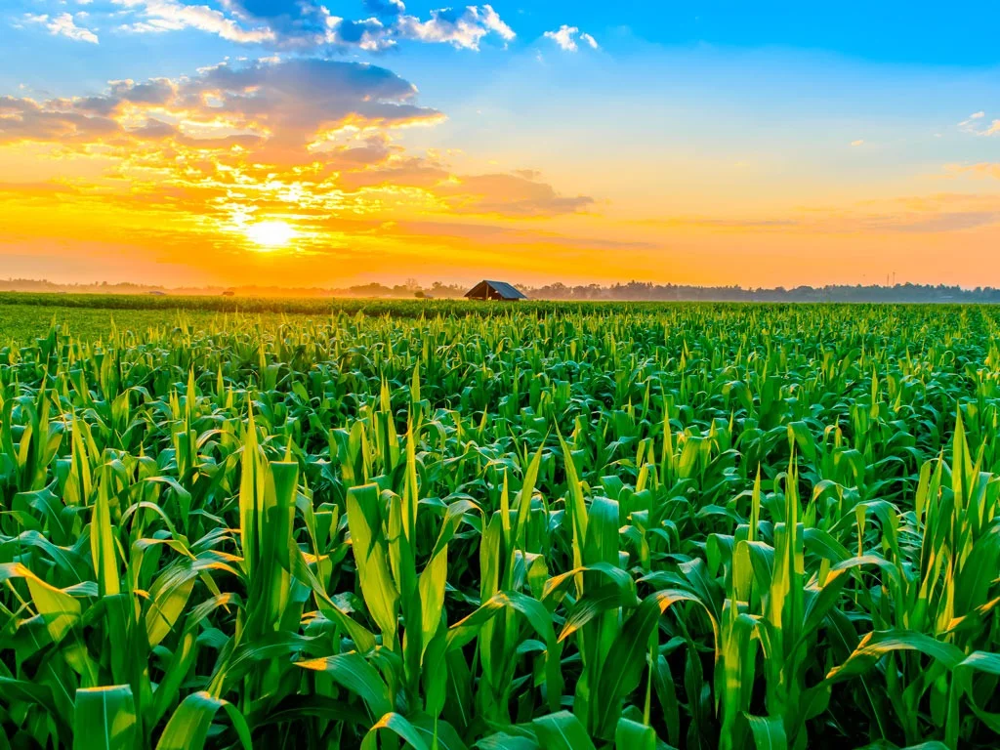
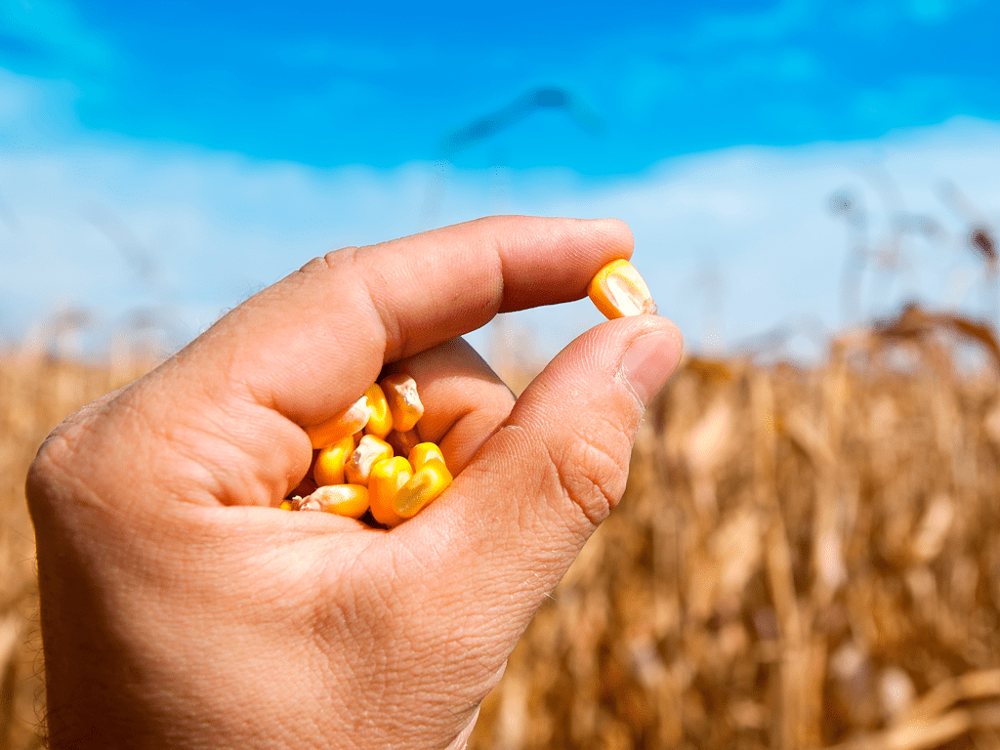
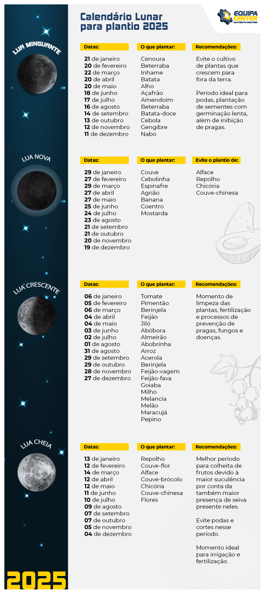

Conceito de Plantio Agrícola
O plantio agrícola é uma atividade fundamental para a produção de alimentos e matérias-primas essenciais para a economia. O milho (Zea mays) é uma das culturas mais importantes do Brasil, sendo utilizado tanto para alimentação humana quanto para ração animal e indústria. A EMBRAPA destaca que o milho é cultivado em diversas regiões do país devido à sua adaptação a diferentes climas e solos, o que contribui para sua grande importância econômica e social.
A agricultura moderna busca otimizar recursos como água e nutrientes, aumentando a produtividade e reduzindo impactos ambientais. O conhecimento dos períodos ideais de plantio, preparação do solo, escolha de sementes adequadas e técnicas apropriadas são essenciais para garantir o sucesso da cultura do milho.
Calendário de Plantio
O plantio do milho no Brasil varia conforme a região e as condições climáticas. A seguir, um calendário básico para o plantio, considerando as safras de verão e de inverno:
| Região | Safra de Verão | Safra de Inverno |
|---|---|---|
| Sudeste | Setembro a Novembro | Fevereiro a Março |
| Centro-Oeste | Outubro a Dezembro | Março a Maio |
| Sul | Setembro a Dezembro | Fevereiro a Abril |
É importante respeitar essas janelas para garantir boas condições de temperatura e umidade, fatores essenciais para a germinação e desenvolvimento inicial da planta.
Preparos para o Plantio
Antes do plantio, o solo deve ser preparado para garantir a melhor germinação e desenvolvimento do milho. Os principais preparos incluem:
- Aragem e gradagem: revolver o solo para melhorar aeração e drenagem.
- Correção do solo: aplicação de calcário para corrigir a acidez e ajuste do pH.
- Adubação: fornecimento dos nutrientes necessários (nitrogênio, fósforo, potássio) com base em análise de solo.
- Controle de pragas e doenças: uso de defensivos agrícolas conforme recomendação técnica.
O preparo correto do solo é essencial para reduzir perdas e garantir um ambiente favorável para as sementes.
Sementes para o Plantio
A escolha das sementes é um dos passos mais importantes para o sucesso do plantio. Para o milho, existem diferentes variedades híbridas e sementes simples, cada uma adequada a determinadas condições climáticas e tipos de solo.
É recomendado adquirir sementes certificadas e de alta qualidade para garantir maior vigor, resistência a pragas e melhor rendimento. Além disso, a EMBRAPA indica que as sementes devem ser armazenadas em local seco e fresco para manter a viabilidade até o momento do plantio.
Calendário Lunar e Plantio
Algumas práticas agrícolas tradicionais levam em consideração o calendário lunar para determinar o melhor momento do plantio. Acredita-se que diferentes fases da lua influenciem o crescimento das plantas, especialmente em culturas como o milho.
Em geral, o plantio durante a fase crescente da lua (do quarto crescente até a lua cheia) é considerado ideal para o desenvolvimento das folhas e frutos. Já na lua minguante, recomendam-se práticas de poda e colheita. Embora não haja consenso científico completo, muitos agricultores ainda utilizam essas técnicas como complemento aos métodos técnicos.
Técnicas de Plantio
As técnicas de plantio do milho evoluíram com o avanço da agricultura, visando maior produtividade e sustentabilidade. As principais técnicas são:
- Plantio direto: consiste em plantar diretamente sobre a palha da cultura anterior, minimizando o revolvimento do solo e preservando a umidade.
- Plantio convencional: preparo completo do solo com aragem e gradagem antes do plantio.
- Plantio em fileiras: método mais comum, facilita o manejo e aplicação de defensivos.
- Plantio em sistema de integração lavoura-pecuária-floresta (ILPF): combina o cultivo de milho com pastagem e árvores, promovendo sustentabilidade.
A escolha da técnica deve considerar o tipo de solo, clima, equipamentos disponíveis e objetivos de produção.
Bibliografia
- EMBRAPA. Milho. Disponível em: https://www.embrapa.br/milho. Acesso em: 15 mai. 2025.
- INSTITUTO AGRONÔMICO DE CAMPINAS (IAC). Calendário agrícola do milho. Disponível em: https://www.iac.sp.gov.br. Acesso em: 15 mai. 2025.
- REIS, João et al. Técnicas modernas de plantio de milho. Revista Agricultura Sustentável, 2023.
- BRASIL. Ministério da Agricultura, Pecuária e Abastecimento. Manual de preparo e plantio do milho. 2024.
Integrantes do Grupo
- Eduardo Esteves Martins - RA: R849937
- Italo Pietro Archila Alves - RA : H442FD3